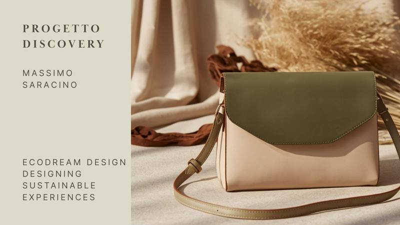
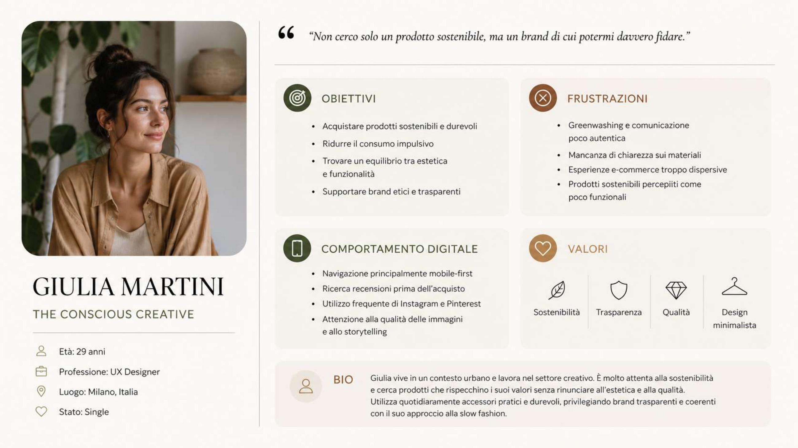

Il progetto
Ecodream Design è un brand immaginario di borse e accessori sostenibili, realizzati con materiali riciclati e produzione responsabile. In questa prima fase di Discovery ho analizzato il brand a partire dal suo posizionamento: design, sostenibilità e trasparenza come valori guida per un pubblico attento.
Il lavoro comprende un'analisi euristica basata sulle 10 euristiche di Nielsen, condotta su desktop e mobile, seguita da una prima mappatura dell'architettura informativa del sito.
La fase si chiude con una ricerca di mercato e strategia: analisi del target, definizione degli obiettivi di ricerca e uno studio comparativo dei competitor, per capire dove Ecodream può differenziarsi davvero.

Uno sguardo al dettaglio
Una delle persona emerse dalla ricerca, Giulia Martini — "The Conscious Creative": obiettivi, frustrazioni e valori raccolti per orientare le scelte progettuali successive.